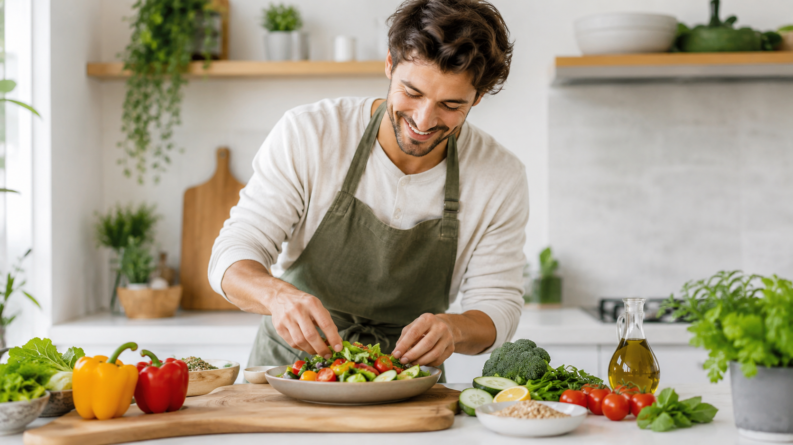

Fresh ideas for better meals
Healthy Recipe Finder is built to make cooking easier, faster, and
more enjoyable for anyone who wants good food without complicated
steps.

About Us
We are a team of passionate food enthusiasts dedicated to helping you discover delicious, healthy recipes that fit your lifestyle. Our mission is to make healthy eating accessible and enjoyable for everyone.
Our Story
We started with a passion for creating meals that feel homemade, balanced, and full of flavor. From quick breakfasts to satisfying dinners, every dish is prepared with care to make healthy eating easier and more enjoyable.
Our Mission
Our mission is to help people enjoy better meals without stress. We focus on fresh vegetables, lean proteins, whole grains, and simple cooking methods to create food that tastes good and supports a healthy lifestyle.
Why Choose Us?
We believe that healthy food should never feel boring or complicated. Our menu is designed for busy people who want delicious meals made with real ingredients, clear flavors, and balanced portions.
Fresh Ingredients First
Every meal starts with quality ingredients. We use colorful vegetables, fresh herbs, natural sauces, and simple seasonings to bring out the real taste of each dish without making it heavy or overdone.
Made for Everyday Life
Whether you need a quick lunch, a light dinner, or a filling meal after a long day, our dishes are made to fit your routine. Simple, fresh, and ready to enjoy in minutes is our goal.
Healthy Can Be Delicious
We do not believe in choosing between healthy and tasty. Our food combines balanced ingredients with rich flavors, so every meal feels satisfying, colorful, and full of life.
Our Cooking Style
Our cooking style is clean, simple, and modern. We avoid unnecessary complexity and focus on meals that are easy to understand, beautifully served, and enjoyable from the first bite.
Food That Brings People Together
Food is more than something we eat. It is a way to connect, share, and enjoy moments with others. That is why we create meals that feel welcoming, warm, and suitable for everyone.
Ready to Find Your Next Favorite Meal?
Explore our recipes and discover fresh ideas for breakfast, lunch,
dinner, and everything in between.
Good food is only one click away.